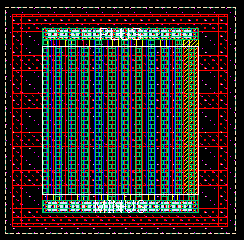
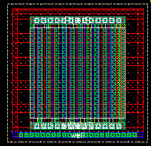
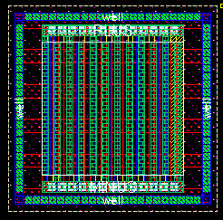

c4lmim well contacts property
these layouts show the effect of varying the well contacts property for an example c4lmim cap
well contacts = "lr" (this is the default)
well contacts = "n"

well contacts = "b"

well contacts = "lbrt"
